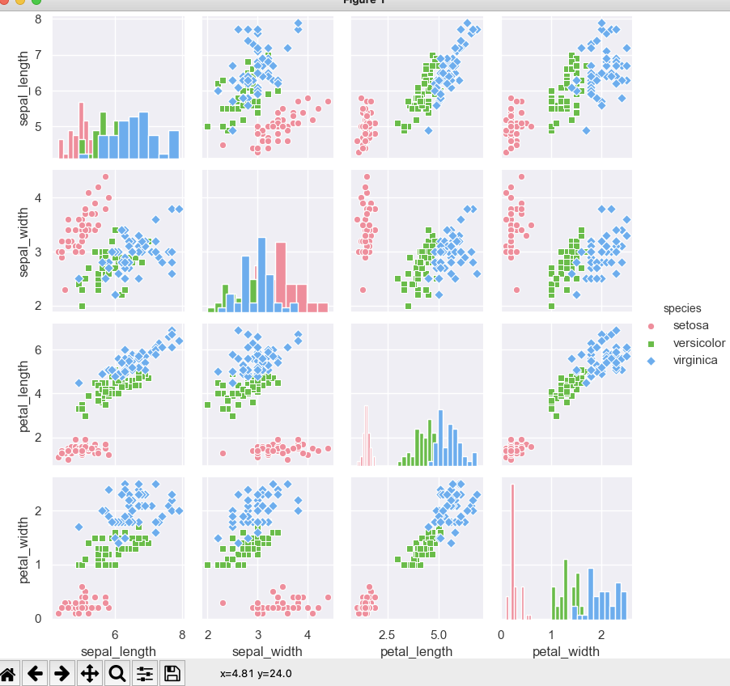
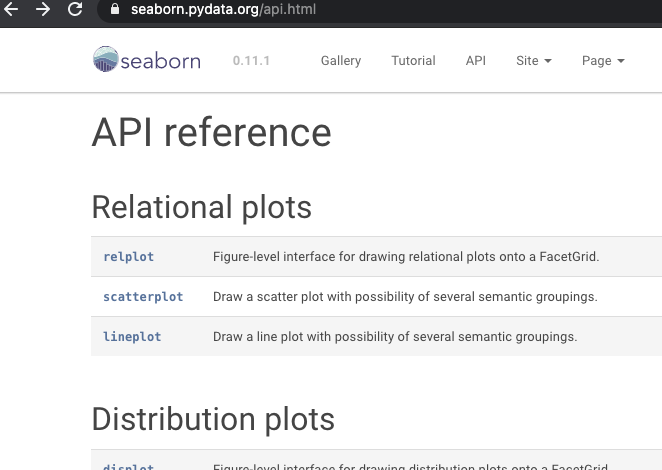
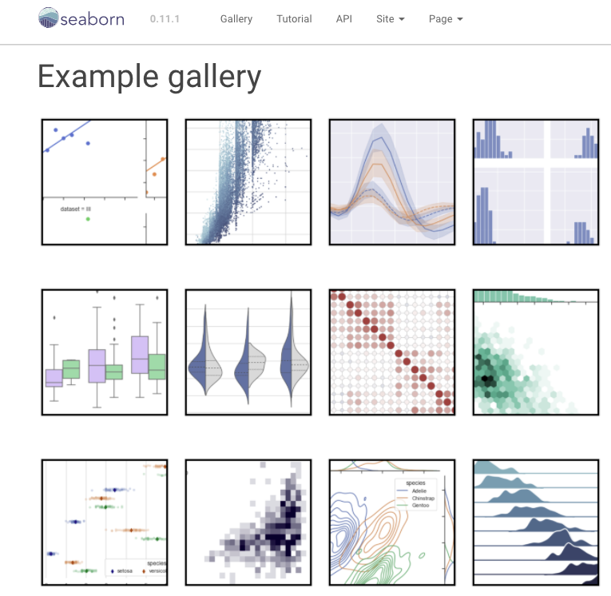

- 00 导读 入门Python的必备知识.md.html
- 00 开篇词 重复工作这么多，怎样才能提高工作效率？.md.html
- 01 拆分与合并：如何快速地批量处理内容相似的Excel？.md.html
- 02 善用Python扩展库：如何批量合并多个文档？.md.html
- 03 图片转文字：如何提高识别准确率？.md.html
- 04 函数与字典：如何实现多次替换.md.html
- 05 图像处理库：如何实现长图拼接？.md.html
- 06 jieba分词：如何基于感情色彩进行单词数量统计？.md.html
- 07 快速读写文件：如何实现跨文件的字数统计？.md.html
- 08 正则表达式：如何提高搜索内容的精确度？.md.html
- 09 扩展搜索：如何快速找到想要的文件？.md.html
- 10 按指定顺序给词语排序，提高查找效率.md.html
- 11 通过程序并行计算，避免CPU资源浪费.md.html
- 12 文本处理函数：三招解决数据对齐问题.md.html
- 13 Excel插件：如何扩展Excel的基本功能？.md.html
- 14 VBA脚本编程：如何扩展Excel，实现文件的批量打印？.md.html
- 15 PowerShell脚本：如何实现文件批量处理的自动化？.md.html
- 16 循环与文件目录管理：如何实现文件的批量重命名？.md.html
- 17 不同操作系统下，如何通过网络同步文件？.md.html
- 18 http库：如何批量下载在线内容，解放鼠标（上）？.md.html
- 19 http库：如何批量下载在线内容，解放鼠标（下）？.md.html
- 20 不同文件混在一起，怎么快速分类？.md.html
- 21 SQLite文本数据库：如何进行数据管理（上）？.md.html
- 22 SQLite文本数据库：如何进行数据管理（下）？.md.html
- 23 怎么用数据透视表更直观地展示汇报成果？.md.html
- 24 条形、饼状、柱状图最适合用在什么场景下？.md.html
- 25 图表库：想要生成动态图表，用Echarts就够了.md.html
- 26 快速提取图片中的色块，模仿一张大师的照片.md.html
- 27 zipfile压缩库：如何给数据压缩&加密备份？.md.html
- 28 Celery库：让计算机定时执行任务，解放人力.md.html
- 29 网络和邮件库：定时收发邮件，减少手动操作.md.html
- 30 怎么快速把任意文件格式转成PDF，并批量加水印？.md.html
- 春节特别放送1 实体水果店转线上销售的数据统计问题.md.html
- 春节特别放送2 用自顶至底的思路解决数据统计问题.md.html
- 春节特别放送3 揭晓项目作业的答案.md.html
- 结束语 和我一起成为10X效率职场人.md.html
- 捐赠
24 条形、饼状、柱状图最适合用在什么场景下？
你好，我是尹会生。
提起图表，你一定会想到Excel和PPT中的条形图、饼状图、柱状图，这在我们进行工作汇报的时候会经常用到，是我们最经常打交道的图表了。除此之外，还有很多其他种类的图表，比如折线图、热力图等等。
但是，不管你通过哪一种图表，它们都是为了让你能够更直观、更简洁地表达自己的想法，也能让我们更好地从一堆杂乱无章的数字中找出规律。
虽然图表比直接展示数据多了这么多优势，但是也存在一个问题，那就是使用Excel制作一张精美的图表，需要消耗大量的时间。而且这些精美的图表，如果因为临时需要再加载新的数据，又要重复花费时间来制作。别担心，这些问题都可以通过Python中的seaborn库来解决。
所以在今天这节课当中，我就来教你怎么使用seaborn库实现图表的重复生成，并根据不同的场景使用不同类型的图表。
生成统一风格的图表
在Python的图表库中，最著名的库叫做matplotlib，它的语法简单，而且支持的图表类型丰富，是数据分析场景中经常用到的图表工具。
但是如果你直接把它应用到办公自动化场景中，虽然matplotlib的功能是强大的，不过美观程度相对就比较差了。因此，我今天就带你学习一个基于matplotlib库，并且在外观上进行了优化的扩展库，叫做seaborn，它能弥补matplotlib在外观上的不足。
那么接下来，我就以为鸢尾花分类为例，为你讲解一下seaborn库的安装，以及绘图的基本流程。
鸢尾花分类是深度学习用于自动分类的经典问题。我们使用它的数据集是因为它的数据量适中，而且包含了必备的花萼和花瓣的长宽数据，以及长宽数据对应的三个品种的鸢尾花。既能通过seaborn观察到分类结果，又能将用于绘图的代码应用到自己的工作场景中。
用seaborn生成图表的基本流程
seaborn库的安装非常简单，由于它的安装包和软件同名，所以使用pip命令安装即可。安装之后，就可以使用它来生成图表了。你可以按照导入库、设置图表样式、绘制图形三个步骤来实现图表绘制功能。我们来依次学习一下。
首先是导入库。在这一步骤中，你需要格外注意导入seaborn库的名称，以及导入的方法。
由于seaborn的功能是基于matplotlib实现的图表基本绘制功能，所以这两个库必须都要导入，否则就没法生成图表。
在导入的方法上，我发现导入库的名字很长，这就意味这你在调用库的时候也需要输入比较长的字符。因此我在导入的时候增加了一个“as”关键字，它可以将库的名称简写为更简单的“别名”，以此来简化代码的编写。你需要注意，别名要尽可能有意义，而且不要和保留字或当前代码中的变量重复，以免引发运行时的报错。
在导入库的代码中，我为名字比较长的两个库分别起了新的名字叫“sns”和“plt”，那么当前代码就可以利用“sns.XXX”和“plt.XXX”的方式导入这两个库的代码了，这样会比使用原始的名字更精简。
我把导入库的代码写在下方，供你参考。
import seaborn as sns
import matplotlib.pyplot as plt
接下来是设置图表样式。图表样式是由工作场景确定的，包括背景样式和图表的类型。同时在这一步骤，你还要为图表加载数据。所以设置图表样式是seaborn库绘图最关键的部分。
图表样式由背景风格和图表类型两部分组成。
我们先来说风格。风格其实包含了背景色、字体、字形等样式，它们是图表展示时最底层的样子。而这些风格样式通通由seaborn.set()函数的参数控制，所以一旦其中任意一个参数发生了变化，那绘图的效果也会发生变化。
不过由于设置风格的参数比较多，自由组合并展示到用户面前的话，界面不一定会美观，这也会违背我们使用seaborn生成图表的初衷，因此我们需要经过精心调整样式的搭配。那怎么来搭配它们最合理呢？
其实你不必纠结，去逐一尝试每个参数，因为在seaborn的set()函数的参数中提供了五种默认风格，这五种风格不说满足特别高的审美要求，但是在一般绘图中，它的美观程度还是可圈可点的。五种默认风格分别是：“darkgrid”“whitegrid”“dark”“white”“ticks”，它们分别代表了“暗黑网格”“白色网格””暗黑无网格”“白色无网格””空白背景”，这五种风格可以通过set()函数的style关键字参数来指定。
如果你想在这五种默认风格上继续修改，就可以在指定风格后，通过set()函数的其他参数继续进行修改。我把set()函数的参数提供给你，方便你在工作中找到适合你的图表风格。如下：
seaborn.set(context='notebook', style=''darkgrid', palette=''deep'', font='sans-serif', font_scale=1, color_codes=True, rc=None)
我们再来看图表类型。图表类型是由工作场景来决定的。例如：我想根据花瓣的长宽度，以及花萼的长宽度数据，通过图表来区分三种花的类型。因此我需要一种图形来表示花瓣和花萼的长短分布情况。
显然，我们是希望能根据花瓣和花萼的长短宽窄来得到分布情况，而不是观察变化趋势，因此我会采用散点图，而不是折线图来表达花的数据。那么散点图的绘制，是通过函数seaborn.pairplot()来实现图表类型的设定的。
seaborn.pairplot()函数不但能够指定图表类型，还能为图表加载数据和设置图表的类型、点样式。主要包括三部分，分别是加载的数据源、指定图表类型以及该类型需要绘制的点的样式。
第一部分，加载的数据源，数据源可以由二维元组组成类似Excel一样的多行多列的数据，数据中的第一行和第一列会作为标题，被seaborn自动处理。我在代码中使用了示例数据“鸢尾花分类”来为你展示数据的加载。
它的示例数据是通过seaborn.load_dataset()函数导入的，这个函数会自动访问GitHub下载数据。如果你无法访问GitHub，我就再为你提供一个示例数据的镜像站。除了鸢尾花数据外，镜像站这里还包括房产价格预测等经典示例数据，你可以利用它们来学习不同的图表。我把示例数据的地址放在这里，另外，我把部分示例数据也贴在下方，供你参考：
sepal_length sepal_width petal_length petal_width species
0 5.1 3.5 1.4 0.2 setosa
1 4.9 3.0 1.4 0.2 setosa
2 4.7 3.2 1.3 0.2 setosa
3 4.6 3.1 1.5 0.2 setosa
4 5.0 3.6 1.4 0.2 setosa
.. ... ... ... ... ...
145 6.7 3.0 5.2 2.3 virginica
146 6.3 2.5 5.0 1.9 virginica
147 6.5 3.0 5.2 2.0 virginica
148 6.2 3.4 5.4 2.3 virginica
149 5.9 3.0 5.1 1.8 virginica
我再来为你解释一下示例数据。它是由五列组成的，分别表示鸢尾花的花萼长度、宽度，鸢尾花的花瓣长度、宽度（你可以通过百度来搜索鸢尾花的图片，来了解什么是花萼的长宽，什么是花瓣的长宽），以及三种鸢尾花品种（setosa 山鸢尾，versicolor 杂色鸢尾，virginica 维吉尼亚鸢尾）。我通过散点图的方式采用不同维度展示花的特性，让你能根据颜色把三种花区分出来。
第二部分是指定图表类型，它是由“kind = ‘scatter’”参数指定的。因为pairplot()函数支持散点图和回归图(kind=‘reg’)，我们需要关注分布情况，所以使用了散点图的方式来展示数据。
第三部分是点的样式。绘制的散点图中的每个点，也可以单独设置它们的样式。例如我指定了每个点的大小“height=2”，以及指定了色彩样式“palette=‘husl’”，并为每个列指定不同的颜色“hue = ‘species’”。
以上是如何设置图表的样式的核心代码，为了让你更好地理解设置的参数，我将这一步骤的代码一并写在下方，供你参考。
# 设置背景
sns.set(style="darkgrid", color_codes=True)
# 使用示例数据
iris = sns.load_dataset('iris',data_home='seaborn-data',cache=True)
# 加载数据，使用散点图，设置点的颜色和样式
sns.pairplot(iris,
kind = 'scatter', #散点图
diag_kind = 'hist', #直方图
hue = 'species', #按照某一字段进行分类
palette = 'husl', #设置调色板
markers = ['o', 's', 'D'], #设置不同系列的点样式
height = 2 #图标大小
)
最后一步是绘制图形，由于seaborn基于matplotlib实现图形，因此需要使用plt.show()函数进行图形的绘制，那么鸢尾花数据的散点图绘制结果如下：

在截图中，基于花的四个属性，我采用了不同的维度进行绘图。同时你会发现，在某一维度下，其中一种颜色和其他颜色有明显的分界，非常容易把其中一种和另外两种花区分开。
通过观察散点图，你会得到这样一个结论，使用合理的图形，能够帮你更好地解释某个晦涩难懂的概念，也能更容易从数据中发现规律。那既然不同的图表能带来不同的价值，接下来，我就来为你讲解一下，如何使用seaborn生成其他类型的图表，比如可以通过histplot()函数生成柱状图、heatmmap()生成热力图、kdeplot()生成核密度图等等。
用seaborn生成不同类型的图表
要想使用seaborn生成其他类型的图表，你需要学会如何使用官方文档。我以折线图为例，为你讲解一下官方文档的正确用法。
在seaborn的官方文档地址API页面下，所有的图表都先按照不同的用途进行了分类，折线图在表示关系的分类中，你可以参考如下截图。

当你需要绘制折线图时，可以点击“lineplot”，进入折线图的函数解释网页。它的网页采用了和Python官方文档风格一致的API解释方法，即函数定义、一般场景案例和特殊场景案例。
如果你是第一次使用折线图，那你可以按照一般场景案例、函数定义和特殊场景案例的顺序来学习这个函数。如果你对折线图已经有了较多的使用经验，可以从函数定义，按照网页顺序阅读官方文档。为什么要按照这样的方式来学习呢？
在你对某一图表有了初步的使用经验后，会对该图形的样子有一个感性的认识，这时候再通过函数的定义、参数去学习它们，会比通过一般场景案例来学习的效率更高。而且通过学习函数的参数，能够了解哪些技术点会影响图形的展示。
而对于第一次使用某一图表的话，你没法通过图表的名字想象出这类图形的优缺点，因此我会建议你对初次使用的图形，先按照一般场景案例把图形展示出来，有个直观的印象。
不只是seaborn的文档，在学习其他库甚至Python语言，或其他任何编程语言，都需要通过阅读官方文档来掌握扩展知识。而阅读官方文档最佳的时机，是当你掌握了该软件的基本应用之后，例如在你掌握seaborn的散点图，以及它的基本运行过程之后，这时你就需要通过官方文档的学习来掌握更多的图表。当你掌握足够多的图表后，用seaborn绘图才能更加得心应手。
为不同的应用场景选择合适的图表
由于seaborn支持的图表非常丰富，在有经验的开发工程师进行图表选择时，绝不会逐个尝试。他们会根据图表的应用场景来选择适合的种类，再通过适合的种类再细化到图表的具体样式。
但是你可能并没有使用过seaborn的图表，甚至也不了解图表会有多少种类型、每种类型里包含着哪些具体的图表。因此根据是否有图表的使用经验，你可以按照我给你提供的两种方法来根据工作场景，找到最适合你的图表。这两种解决办法总结来说就是参考图例和参考分类。
第一种解决办法是参考图例，我把这种情况称作是“手中有剑、心中无剑”，“手中有剑”代表着你能看到图表一共有哪些，但是心中还不清楚哪种更适合你的场景。在seaborn的官方文档中，列举了各种图例，它的地址和截图如下：

你可以根据截图，找到离你的工作场景最相近的图表，通过点击图表之后，你就可以得到官方网站的演示代码了。演示代码就是你的“宝剑”。通过修改演示代码来完善你的工作场景的图表。
第二种解决办法是参考分类，我把这种情况称作“心中有剑，手中无剑”，“心中有剑”也就意味着你在心里已经*把*应用场景锁定在某一个图表的大类中，但是这一大类里包含了哪些具体的图表，要看seaborn能否支持。
这时候，你就要根据你的业务场景，分析出它都对应了以下四个分类中的哪一类，再按照分类通过官方文档API页面找到具体的图表函数。四个分类如下。
- 关系类，用于展示数据集中多个变量之间的关系，relplot()、scatterplot()、lineplot()都属于关系类。
- 分布类，用于展示数据集中多个变量的分布情况，displot()、kdeplot()是这一类经常使用的图表类型。
- 线性关系类，是把多个变量联系起来，观察每个采样的线性变化趋势。regplot() 和 lmplot()经常用于表示线性关系。
- 结构化多图，用于把多种方式的分析数据放在一起进行展示。例如我们分析鸢尾花就使用了散点图+柱状图的方式，但是散点图更能体现出它的各种属性之间的关系。
你在心中掌握的图表分类就是“宝剑”，通过分类能够更快找到特定的图表类型。
这两种方式是基于不同场景，快速选择图表的方法。因为选择图表最核心的思路还是要基于场景，而不能基于个人的喜好或结果的美观性来选择图表，避免以偏概全。
小结
最后，我来为你总结一下这一讲的主要内容。在本讲中，我通过seaborn生成图表的过程，为你讲解了如何在Python中使用图表。相对于其他软件，Python的图表样式由参数组成，你可以为多次产生图表指定相同的样式、也能为不同的数据重复使用图表来提高绘制图表的效率。
在为你讲解了散点图之外，我还为你讲解了如何基于场景选择合适的图表，你可以基于目前对图表掌握的深度，选择更适合你的图表深入学习路线。
同时，我还着重为你强调了文档的重要性，它也是很多专业从事开发的工程师必需掌握的技能之一。如果你希望更加深入学习seaborn以及更加深入学习Python，你应该从现在开始阅读官方文档，它会是你未来编写代码最权威的参考资料。
思考题
我来为你留一道思考题，如果我的工作场景需要展示当前地区的房价走势，你会选择什么样的图表进行展示呢？你能否用seaborn将这一图表绘制出来呢？
欢迎你把思考和想法分享在留言区，我们一起交流讨论。如果今天的内容对你展示工作成果有帮助，也欢迎你把课程分享给你的同事和朋友，我们一起做职场上的效率人。
© 2019 - 2023 Liangliang Lee. Powered by gin and hexo-theme-book.